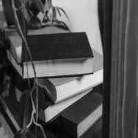

甲骨學導論
NT$ 200
金文釋例
NT$ 460
周金文選（BOD）
NT$ 220

甲骨周金文正形注音簡釋彙編（BOD）
NT$ 960

周金文釋例(精裝)
NT$ 520

漢語古文字形表
NT$ 1000

殷虛文字類編
NT$ 800

商周彝器通考．圖錄
NT$ 3200

龍龕手鑑研究
NT$ 1200

說文無聲字考
NT$ 360
重文彙集
NT$ 250
殷墟甲骨文通釋稿（BOD）
NT$ 800
增訂薇廎甲骨文原（上、下）(BOD)
NT$ 0
優美的中國文字
NT$ 480

圖象文字研讀
NT$ 140

瀛涯敦煌韻輯新編.瀛涯敦煌韻輯別錄
NT$ 1000

古音學發微
NT$ 1500

六十年來之聲韻學
NT$ 140

清真詞韻考
NT$ 0

形聲多兼會意考(精)
NT$ 300

中國聲韻學
NT$ 420

閩南話考證－史記例證
NT$ 250

等韻源流
NT$ 460

閩南話考證－證說文解字舉例
NT$ 320
閩南話考證－荀子史記漢書例證
NT$ 460
閩南話考證－古書例證
NT$ 660

閩南語考釋－附金門話考釋
NT$ 440

臺灣閩南方言記略（再版）
NT$ 400

漢語音韻學
NT$ 400

廣韻作業
NT$ 300

詞林正韻
NT$ 280

毛詩正古音
NT$ 600
《廣韻》聲類手冊
NT$ 350
說文形聲字研究
NT$ 440
說文相關部首探原
NT$ 0

說文部首授讀
NT$ 0

說文解字入門
NT$ 460

臺灣五十年來聲韻學暨漢語方音學術論著目錄初稿（1945-1995）（BOD）
NT$ 440
殷契佚存校釋上下冊
NT$ 2800

閩南語聲韻學
NT$ 420

閩南語考釋續集
NT$ 520

說文解字導讀
NT$ 650

金門話研究
NT$ 520
聲韻學表解
NT$ 320

假借溯源
NT$ 400
爾雅義疏釋例
NT$ 0

部首字形演變淺說
NT$ 0

趣味的部首（上）
NT$ 200

趣味的部首（下）
NT$ 200

蘦硯齋讀書隨筆
NT$ 180